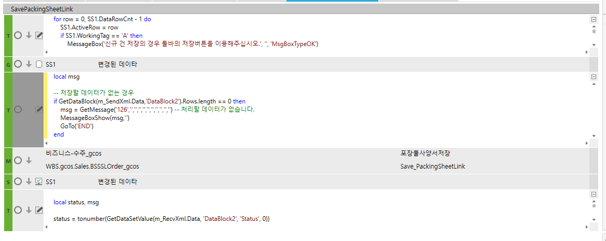

버튼 저장

for row = 0, SS1.DataRowCnt - 1 do
SS1.ActiveRow = row
if SS1.WorkingTag == 'A' then
MessageBox('신규 건 저장의 경우 툴바의 저장버튼을 이용해주십시오.', '', 'MsgBoxTypeOK')
GoTo('END')
return
end
end
local msg
-- 저장할 데이터가 없는 경우
if GetDataBlock(m_SendXml.Data,'DataBlock2').Rows.length == 0 then
msg = GetMessage('126','','','','','','','','','','') -- 처리할 데이터가 없습니다.
MessageBoxShow(msg,'')
GoTo('END')
end
local status, msg
status = tonumber(GetDataSetValue(m_RecvXml.Data, 'DataBlock2', 'Status', 0))
if status == 0 then
MessageBoxShow('저장 완료 되었습니다.','')
else
MessageBoxShow(GetDataSetValue(m_RecvXml.Data, 'DataBlock2', 'Result', 0),'')
end
DROP PROCEDURE gcos_SWSLOrderGetPackingSheetLinkSave
GO
CREATE PROCEDURE gcos_SWSLOrderGetPackingSheetLinkSave
@ServiceSeq INT = 0,
@WorkingTag NVARCHAR(10)= '',
@CompanySeq INT = 1,
@LanguageSeq INT = 1,
@UserSeq INT = 0,
@PgmSeq INT = 0,
@IsTransaction BIT = 0
AS
-- 로그테이블 남기기(마지막 파라메터는 반드시 한줄로 보내기)
EXEC _SCOMXmlLog @CompanySeq ,
@UserSeq ,
'gcos_TSLOrderItem', -- 원테이블명
'#BIZ_OUT_DataBlock2', -- 템프테이블명
'OrderSeq,OrderSerl' , -- 키가 여러개일 경우는 , 로 연결한다.
@PgmSeq, ''
IF EXISTS (SELECT 1 FROM #BIZ_OUT_DataBlock2 WHERE WorkingTag = 'U' AND Status = 0 )
BEGIN
UPDATE gcos_TSLOrderItem
SET PackingSheetLink = A.PackingSheetLink,
LastUserSeq = @UserSeq,
LastDateTime = GETDATE(),
PgmSeq = @PgmSeq
FROM #BIZ_OUT_DataBlock2 AS A
JOIN gcos_TSLOrderItem AS B ON B.CompanySeq = @CompanySeq
AND B.OrderSeq = A.OrderSeq
AND B.OrderSerl = A.OrderSerl
WHERE A.WorkingTag = 'U' AND A.Status = 0
IF @@ERROR \<> 0
BEGIN
RETURN
END
-- 사이트용 테이블 로직(수정 시 사이트용 테이블에 데이터 없을 경우 신규 생성합니다.)
INSERT INTO gcos_TSLOrderItem(
CompanySeq,
OrderSeq,
OrderSerl,
OrderSubSerl,
PackingSheetLink,
LastUserSeq,
LastDateTime,
PgmSeq)
SELECT @CompanySeq,
A.OrderSeq,
A.OrderSerl,
ISNULL(A.OrderSubSerl,0),
A.PackingSheetLink,
@UserSeq,
GETDATE(),
@pgmSeq
FROM #BIZ_OUT_DataBlock2 A
WHERE WorkingTag = 'U'
AND Status = 0
AND NOT EXISTS(SELECT 1
FROM gcos_TSLOrderItem AS B WITH(NOLOCK)
WHERE B.CompanySeq = @CompanySeq
AND A.OrderSeq = B.OrderSeq
AND A.OrderSerl = B.OrderSerl
AND A.OrderSubSerl = B.OrderSubSerl)
IF @@ERROR \<> 0
BEGIN
RETURN
END
END
RETURN
/**************************************************************************************************/